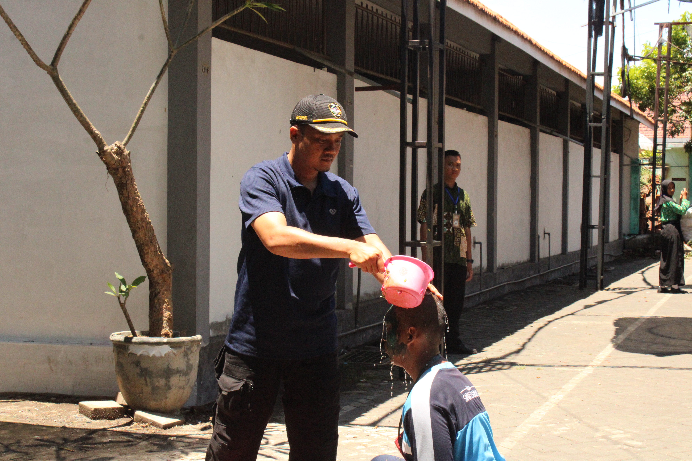
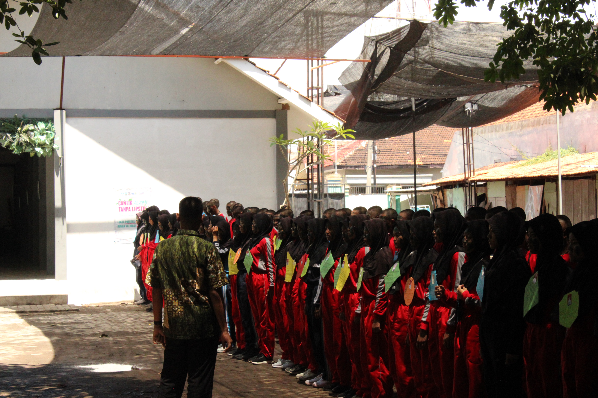
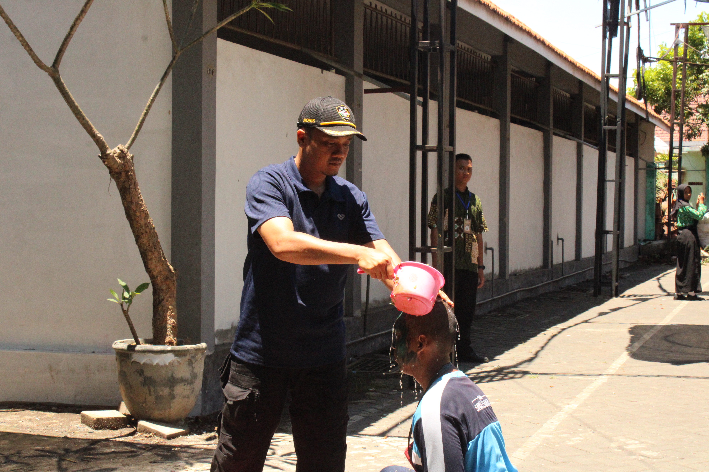
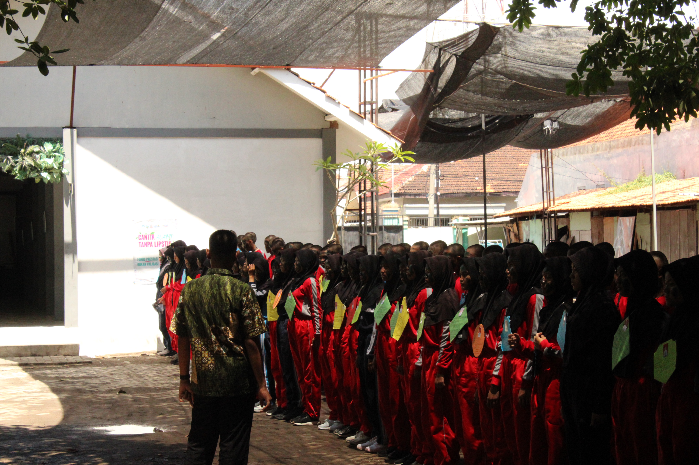

FOKA PKS SKENSA ANGKATAN 16
Forum berbagi pengalaman & inspirasi Paskibra SMKN 1 Pasuruan
Forum berbagi pengalaman & inspirasi Paskibra SMKN 1 Pasuruan
Kami adalah Angkatan 16 Foka PKS Skensa dari SMKN 1 Pasuruan. Forum ini dibuat untuk berbagi pengalaman, tips, dan semangat kebangsaan!
Tempat: Lapangan SMKN 1 Pasuruan. Jangan lupa topi dan uang kas ya!

 



Angkatan 16 Foka PKS Skensa adalah generasi muda penuh semangat dan dedikasi. Dengan motto "Bersatu, Tangguh, Bermartabat", kami siap menjaga tradisi Paskibra dan menginspirasi generasi berikutnya!